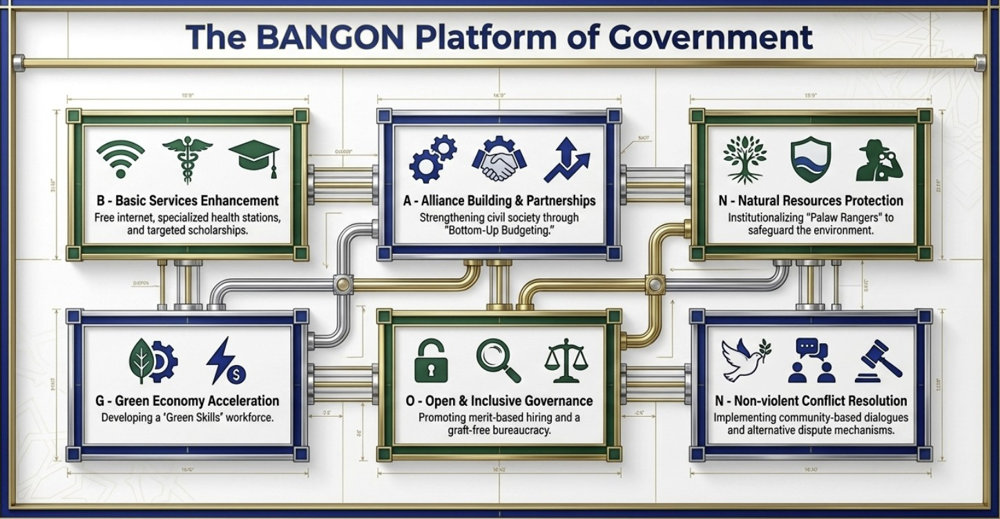

Ang BANGON Platform of Government
Anim na haligi, isa sa bawat letra ng salitang BANGON. Hindi ito listahan ng pangako — ito ay paraan ng pamamahala, na may panukalang batas sa likod ng bawat isa at may paraan para makatulong ka sa bawat isa.

Ang anim na haligi
B · A · N · G · O · N
May sariling pahina ang bawat haligi. I-tap ang gusto mong basahin.
Basic Services
Basic Services Enhancement
₱8,000 household subsidy, Super Health Stations na may libreng gamot at laboratoryo, at libreng internet sa paaralan.
LEARN MORE →Alyansa, Pagkakaisa at Partnerships
Alliance Building & Partnerships
Bottom-Up Budgeting: ang barangay ang magsasabi kung saan mapupunta ang pondo, hindi ang Cotabato lang.
LEARN MORE →Natural Resource Protection and Preservation
Natural Resources Protection
Palaw Rangers, reforestation, proteksyon ng karagatan, at climate-smart na sakahan.
LEARN MORE →Green Economy
Green Economy Acceleration
Halal bilang pandaigdigang pamantayan, Shari'ah-compliant na financing, at Green Skills na may trabaho sa dulo.
LEARN MORE →Open Governance
Open & Inclusive Governance
Meritokrasya sa pagkuha ng empleyado, nababakas na badyet, at anti-korapsyon na may ngipin.
LEARN MORE →Non-Violence and Conflict-Sensitive Approaches
Non-violent Conflict Resolution
Reintegrasyon ng dating kombatant, rehabilitasyon ng Marawi, at community-based na dayalogo.
LEARN MORE →Legislative agenda
Tatlong pakpak ng panukalang batas
Ang haligi ay direksyon; ang batas ang nagpapatupad nito. Nakagrupo sa tatlo ang aming panukala, ayon sa kung ano ang aayusin nila.
Wing A — Serbisyo at Kabuhayan
Super Health Stations Act, panukala sa household subsidy, at libreng internet sa paaralan. Ang direktang dumarating sa pamilya.
Wing B — Ekonomiya at Kalikasan
Bangsamoro Investments and Incentives Code, Environment and Natural Resources Code, at ang Ligawasan Development Authority Act.
Wing C — Pamamahala at Kapayapaan
Bottom-Up Budgeting, Bangsamoro Gender and Development Code, at ang Marawi Siege Victims Compensation Act.
Paano ito bubuoin
Tatlong yugto
Yugto 1 · Ngayon
Ang pundasyon
Ilagay ang serbisyo kung saan ito kulang, at buksan ang libro para makita kung saan napupunta ang pera.
Yugto 2
Ang kakayahan
Sanayin ang Halal auditor, green technician, at health worker na taga-BARMM mismo — para hindi na kailangang mag-import ng kasanayan.
Yugto 3
Ang kompetisyon
Pumasok sa pandaigdigang merkado bilang katumbas — hindi bilang rehiyong naghihintay ng ayuda.
Mga madalas itanong
Tungkol sa BANGON platform
Ano ang ibig sabihin ng BANGON?
Ito ang platform of government ng PBB — anim na haligi, isa sa bawat letra: Basic Services Enhancement, Alliance Building & Partnerships, Natural Resources Protection, Green Economy Acceleration, Open & Inclusive Governance, at Non-violent Conflict Resolution. Ang salitang “bangon” mismo ay pag-ahon at pagtayo.
Bakit anim lang? Hindi ba masyadong kaunti?
Sinasadya. Ang mahabang listahan ng pangako ay madaling gawin at mahirap panagutan. Anim na haligi ang kayang tandaan ng botante, kayang ipaliwanag ng volunteer sa pintuan, at kayang sukatin pagkatapos ng termino.
May panukalang batas ba sa likod ng bawat haligi?
Oo. Ang bawat haligi ay may kaukulang panukalang batas sa aming legislative agenda — halimbawa, ang Super Health Stations Act sa ilalim ng Batayang Serbisyo, at ang Marawi Siege Victims Compensation Act sa ilalim ng Kapayapaan. Nakalista ang mga ito sa bawat pahina ng haligi.
Paano ito babayaran?
Mula sa Block Grant at Special Development Fund na nakalaan na sa BARMM sa ilalim ng Bangsamoro Organic Law. Ang tanong ay hindi kung may pondo — ang tanong ay kung saan ito napupunta at kung sino ang nakakakita ng listahan. Kaya nakatali ang lahat ng haligi sa Bukas na Pamahalaan.
Alin ang pinakaunang gagawin?
Ang Batayang Serbisyo at ang Bukas na Pamahalaan ay magkasabay. Walang saysay ang subsidy kung hindi mababakas ang pera, at walang kabuluhan ang transparency kung walang serbisyong dumarating sa pamilya.
Saan ko makikita ang buong detalye?
May sariling pahina ang bawat haligi, na may konkretong pangako, kaugnay na panukalang batas, at paraan para makatulong ka. I-tap lang ang haligi sa itaas.
Mag-message sa amin
May tanong sa platform? I-tap ang BANGON Platform sa ibaba at padadalhan ka namin ng buod, o magtanong nang direkta.
Karaniwang sumasagot kami sa loob ng ilang oras. Para sa madalian — insidente, reklamo, o usaping pangkaligtasan — tumawag sa 0966 301 8777; may taong sasagot, hindi awtomatikong mensahe.
Handa ka nang sumali?
Ang platform ay papel hangga't walang taong magpapatupad nito.